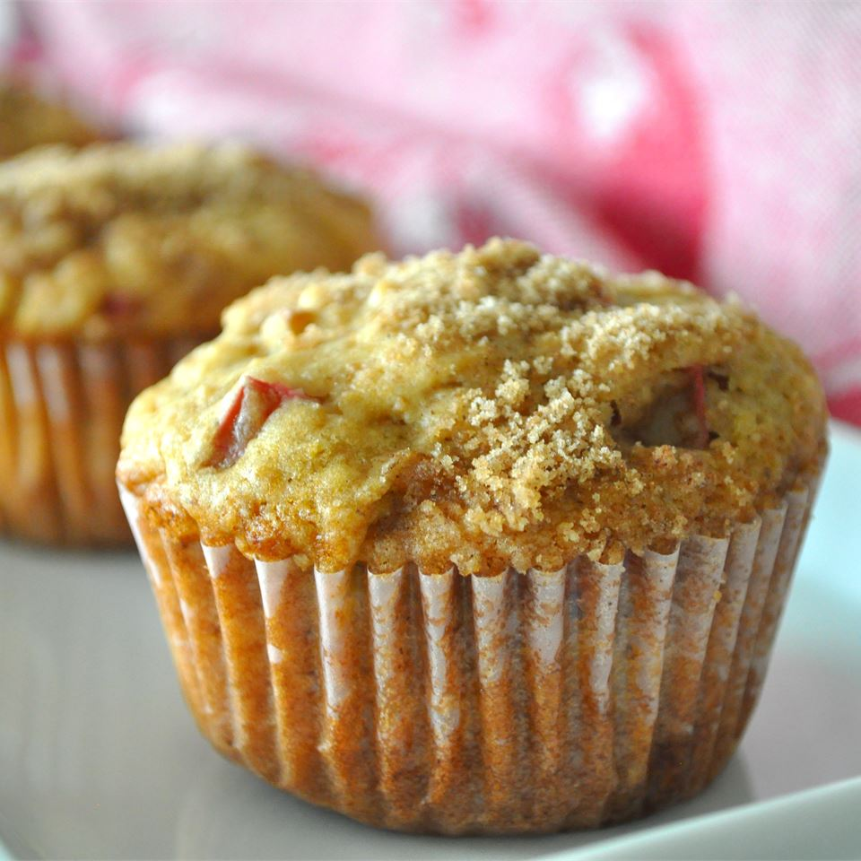

Rhubarb Muffins

Description
These fabulous muffins have a crunchy sweet sugar topping and are great with no extra added butter or jam.
Ingredients
- 2 1/2 cups flour
- 1 teaspoon baking soda
- 1 teaspoon baking powder
- 1/2 teaspoon salt
- 1 1/4 cups brown sugar
- 1/2 cup vegetable oil
- 1 egg
- 1 teaspoon vanilla extract
- 1 cup buttermilk
- 1 1/2 cups diced rhubarb
- 1/2 cup chopped walnuts
- 1 tablespoon melted butter
- 1/3 cup white sugar
- 1 teaspoon ground cinnamon
Steps
-
Preheat the oven to 350 degrees F (175 degrees C). Grease two 12 cup muffin pans or line with paper cups.
-
In a medium bowl, stir together the flour, baking soda, baking powder and salt.
In a separate bowl, beat the brown sugar, oil, egg,
vanilla and buttermilk with an electric mixer until smooth.
Pour in the dry ingredients and mix by hand just until blended. Stir in the rhubarb and walnuts.
Spoon the batter into the prepared cups, filling almost to the top. In a small bowl, stir together the melted butter,
white sugar and cinnamon;
sprinkle about 1 teaspoon of this mixture on top of each muffin.
-
Bake in the preheated oven until the tops of the muffins spring back when lightly pressed, about 25 minutes.
Cool in the pans for at least 10 minutes before removing.
Back to main page